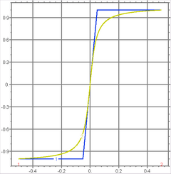

|
swage_test |

  
|
|
swage_test |
|
{ SWAGE_TEST.PDE
This example illustrates the use of the SWAGE and RAMP functions to generate
smoother alternatives to the IF..THEN construct.
IF..THEN is frequently used to turn sources on and off, to define discontinuous
initial conditions and the like.
But in an adaptive system like FlexPDE, discontinuities can be very troublesome.
They create very high frequency transients which can cause intense regridding
and tiny timesteps. When they occur in equation coefficients, they can cause
convergence failure in Newton's method iterations.
The SWAGE and RAMP functions are an attempt to give users an alternative to the
IF..THEN for defining transitions. These functions, particularly SWAGE, allow
FlexPDE to sense the presence of a transition and follow it in the iterative solver.
In the plots created by this problem, we show both the values generated by the functions,
and their derivatives. By contrast, an IF..THEN has an infinite (ie, undefined) derivative
which is impossible to accurately represent numerically.
}
title "SWAGE and RAMP Functions"
select elevationgrid=2000
{ -- No variables, no equations -- }
{ -- Definitions can be included, if desired -- }
{ -- We need a plot domain: -- } boundaries region 1 start(-1,-0.1) line to (1,-0.1) to (1,0.1) to (-1,0.1) to close
plots elevation(ramp(x,-1,1,0.1), swage(x,-1,1,0.1)) from (-0.5,0) to (0.5,0)
elevation(dx(ramp(x,-1,1,0.1)), dx(swage(x,-1,1,0.1))) from (-0.5,0) to (0.5,0)
end
|
 |
Page url: index.html?usage_swage_test.html